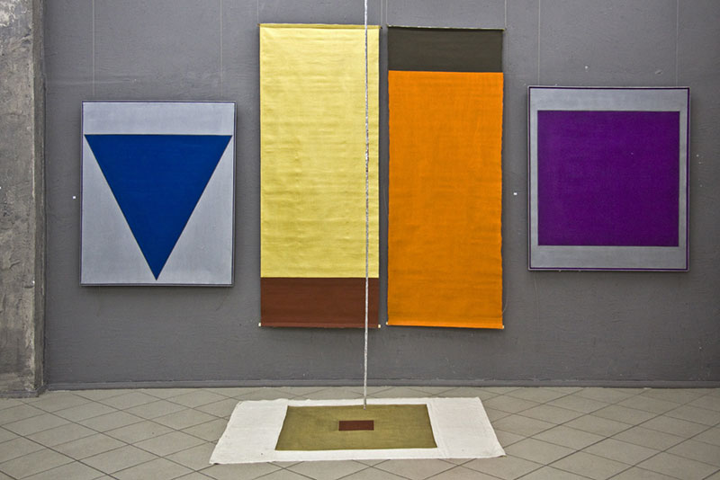
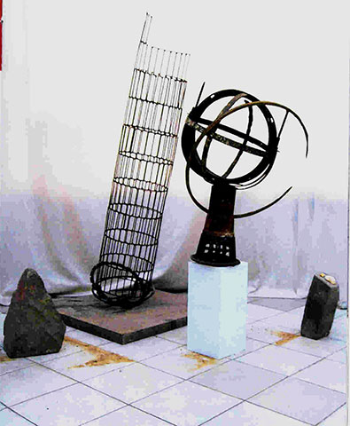
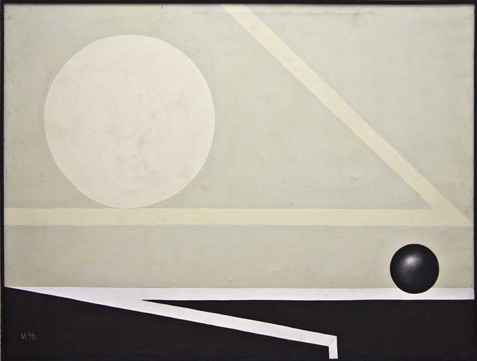
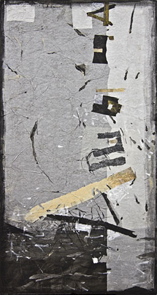
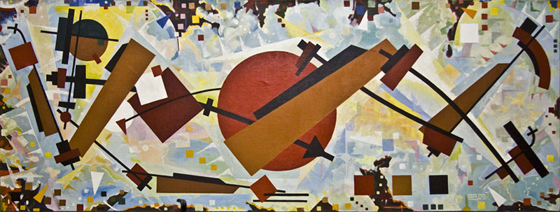
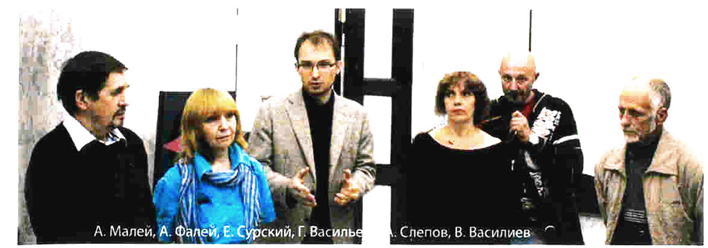

- Витебск — малая родина авангарда
- В.С. Турчин
Фортуна слепа, она не выбирает места, где совершить перелом в ходе истории.
Центром революционных событий в искусстве ХХ века стал не только супер-цивилизованный Париж, но и заштатный белорусский городок Витебск. В 1920 году здесь была основана художественная школа под руководством Казимира Малевича, изобретателя нового стиля в живописи — супрематизма.
Эмблемой этого стиля был знаменитый «Черный квадрат» — «живой царственный младенец», появившийся на свет 17 декабря 1915 года. Он возбудил в публике бурю противоречивых чувств и стал предметом споров и интерпретаций, не утихающих по сей день.
Супрематическая картина не копирует натурные предметы, — она выполняет гораздо более высокую функцию — даёт новую формулу эпохи, отображает приметы Нового Времени — его динамизм, энергию, новую железную машинную жизнь.
«Гигантские войны, великие изобретения, победа над воздухом, быстрота перемещения, телефоны, телеграфы, дредноуты — царство электричества…А наша художественная молодёжь пишет Неронов и римских полуголых воинов» (К. Малевич)
Супрематизм Малевича был умозрительным, философским. Он разрушал старое, но не способен был создать нечто достойное взамен его. Чистый живописный супрематизм, пропагандируемый Малевичем, остался бы кратким эпизодом в истории искусства, если бы соратники и ученики Мастера не трансформировали его в другой стиль, конструктивизм, органически вошедший в практику архитектуры, дизайна и прикладного искусства первой трети ХХ века.
Пафос этого стиля в принципе противоположен призывам супрематизма, но использует его приёмы и типы форм.
Супрематическая сказка стала конструктивистской былью.
- Вместо отрицания исторических форм искусства — созидание новых форм, соответствующих новому образу жизни
- Вместо интуитивной формы — конструкция
- Вместо свободы,понятой как произвол, фантазия, каприз — свобода как осознанная необходимость
- Вместо случайности отношений — логика конструкции.
- Вместо интуитивной формы — конструкция
Преобразование супрематизма в конструктивизм было закономерно, это соответствовало духу времени и задачам искусства. Художники-конструктивисты Эль Лисицкий, Федор Родченко, Владимир Татлин, Илья Чашник, Николай Суэтин — активно участвуют в строительстве новой жизни в первой стране победившего социализма (такова была формула их времени).
Они творят агитационные плакаты, Проекты Универсального искусства, украшают книги, одежду, ткани, посуду супрематическими рисунками... Они свято верят в своё дело и в социализм — отсюда своеобразное совершенство их трудов, сохраняемых и теперь в музеях как образцы высокого искусства.
В 30-е — 60-е годы в СССР авангардизм всех видов подвергался гонениям со стороны государства. Развитие стилей как супрематизма, так и конструктивизма фактически прекратилось.
Только в 70-е годы в городах России и союзных республик возникли авангардные направления в живописи, архитектуре, дизайне. Этому во многом способствовало возрождение связей с зарубежной Европой и Америкой.
Отрубленная ветвь начинает отрастать с того места, где её отрубили.
В Белоруссии авангард вступил на путь возрождения в 80-е годы.
Первыми ласточками были выставки работ Игоря Кашкуревича, Людмилы Русовой, Николая Селещука и многих других (см. «Беларускi авангард 80-х», Менск. Выдавец I.П. Логвiна, 2011).
Наконец, в 90-е годы начинается возрождение Витебской школы в Белоруссии. Оно ознаменовано трудами А. Малея, Г. Васильевой, В. Васильева, А. Фалей, А. Слепова.
Не берусь обсуждать достоинства и недостатки живописи белорусского авангарда за последние тридцать лет. Могу только утверждать, что художники Витебской школы заметно выделяются на фоне других творческих объединений, культивирующих сюрреализм, поп-арт, минимализм или концептуализм. Обаяние наследников Малевича в том, что они сохранили заветы революционного искусства начала века (насколько это возможно), не потеряли веру в положительные ценности жизни и в социальное значение своего труда.
Каждый из них отличается своим индивидуальным стилем и почерком, но у них есть нечто общее. Это, во-первых, общий исторический источник — супрематизм и конструктивизм Витебской школы. Во-вторых, общее для них качество можно определить апофатическим путем, то есть назвать то, чего у них нет, но что щедро демонстрируют различные жанры масскульта.
Они не агрессивны, не циничны, у них нет мелочной фактографии и житейской суеты, декоративизма и эротики, пустых демонстративных жестов и бессодержательного формализма. У них нет хаотического нагромождения пятен и насилия над материалом. А также отсутствует стремление к красоте как цели искусства. Высокое эстетическое качество обеспечивается единством содержания и формы, замысла и исполнения.
Художникам Витебской школы свойственно стремление к правде бытия, логике конструкции, прочности связей элементов; они уважают законы времени, пространства и движения, чувствуют значение чисел и пропорций. Поэтому их искусство встречает интерес и уважение современников.
Галина Васильева. Символика вертикали.
Работы Галины Васильевой более работ других участников выставки наследуют чистоту и принципиальность стиля Малевича. Они отличаются крупной масштабностью, монументальностью и строгостью формы. Их лаконизм сродни первым экспериментам Малевича — большим геометрическим фигурам на плоскости (квадрат, круг, треугольник). Заметим, что у Галины Васильевой треугольник занимает более почетное место, чем у Малевича. Думаю, что это не случайно.
Треугольник — форма символическая. Она воплощает идею триады — магического числа три, а с этим числом связано в человеческой культуре слишком многое. Древнеримский поэт Авсоний насчитал 90 значений этого числа, но признался, что список далеко не полон. Форма треугольника более динамична, чем квадрат; она скорее тяготеет к небу, чем к земле. Она принадлежит скорее миру духовному, чем материальному. Это соответствует общей направленности творчества Галины Васильевой.
В Белоруссии, как нигде, часто видим треугольники — на фронтонах деревенских домов и христианских храмов, на вышивках, деревянной резьбе, орнаментах бытовых предметов. Галина Васильева сакрализует треугольник, придаёт ему монументальность и вневременность. Её треугольные фигуры превращаются в элементы архитектуры, они расчленяют стену и задают ей торжественный медленный ритм. Вертикали композиции повторяют вертикальность тела человека, подтверждают первое отличие человека от животного: homo erectus — прежде всего человек прямостоящий, и только после этого он стал homo sapiens — человек разумный. Зритель, созерцающий ряд высоких треугольных форм, сам как будто вырастает и выпрямляется, уподобляясь им. Он останавливается в раздумии, его мысли очищаются от мелочей и суеты, дыхание становится глубоким и спокойным.
Постойте перед полотнами Галины — и вы почувствуете силу их воздействия. Видимо, в этом оправдание слова «конструктивизм»: художник-конструктивист выстраивает не только сооружения из стержней и плоскостей, он выстраивает духовный мир человека, укрепляет его и делает стройным, свободным от органического зла.
В другом цикле полотен Галины Васильевой, экспонированном на выставке 20.. года, эта же идея вертикальности и минимализма формы выражена ещё более прямо и недвузначно. Здесь визуализированы числа два и четыре. Оба они заложены в основании мира, без них не обходятся ни законы существования материи, ни философские системы, ни человеческие отношения. Два — это симметрия левого и правого, добра и зла, «да» и «нет».
Это симметрия человеческого тела и земного шара, зимы и лета, рождения и смерти. В пластических искусствах диада и четверица совершенно неустранимы.
Четыре полотна Галины Васильевой, разделенные каждое на две равные части — это как бы доказательство теоремы, предложенной Малевичем в его «Квадрате», это подтверждение его истины. Стройный ряд полотнищ во всю высоту зала, их сплоченность, мерный ритм, уверенный вертикализм, доминирующая прямоугольность и прямолинейность — всё это своего рода текст, прочитываемый ясно и громко: есть ещё в мире порядок и закон, космический ритм и всеобщая связь всех явлений.
Василий Васильев. Мифология круга.
Доминирующая форма в работах Василия Васильева — круг. Образованные движением круга тела — формы универсальные, как в мире звезд и планет, так и в органическом земном мире. Шар, цилиндр, эллипсоид, овоид, спираль — всё это линии и тела, вездесущие в организмах растений, животных и человека. Сам Бог, по определению средневековых философов, есть шар, периферия которого нигде, а центр — везде. Широко известны выражения: круг Творения, круг общения, круг интересов, и т.д. Самые важные для нас круглые фигуры — наша голова и зрачки наших глаз. Через них проходят лучи света извне и таинственные импульсы изнутри — наши взгляды, выразительные, как слово и загадочные, как пустота.
Ведь зрачок — это черная пустота, подобно квадратам и кругам Малевича. А пустота — не есть ли источник всякого движения и материи (что доказано современной физикой). Не есть ли это желанное состояние души для правоверного буддиста и единственное место, где боги могут появиться? (Мартин Хайдеггер).
Василий Васильев воздаёт должное внимание и почтение Кругу, как конструктивной основе бесчисленного количества существ и предметов.
В геометрически чистых и прозрачных моделях круга можно прочитать и модель Времени (в древнеиндийской философии), и образ колеса, без которого была бы невозможна наша цивилизация, и раму для портрета человека. Посмотрите друг на друга сквозь это тонкое колесо — и вы увидите знакомое лицо в несколько другом свете, немножко другим, как бы нарисованным рукой художника.
Александр Малей. Обновление конструктивтизма.
Александр Малей — старший из группы художников, представленных в этой экспозиции. В 19.. году в Минске были показаны его работы, в которых художник явно продолжал традиции супрематизма и конструктивизма Витебской школы начала прошлого века. Видимо, постепенно происходила эволюция стиля художника одновременно в двух направлениях: вперед к поп-арту и назад к посткубизму Малевича (определения «вперед» и «назад» здесь следует понимать только в хронологическом смысле).
Пространственные композиции Александра Малея, представленные на данной выставке, напоминают, с одной стороны, ассамбляжи В. Татлина или «объекты» М. Дюшана, а с другой — кубистическую работу К. Малевича «Голова крестьянки в платке». Если можно причислить эти работы к направлению конструктивизма, — то только нового варианта этого стиля конца ХХ века, когда совершенство строительной техники позволило не строить, а лепить здания в духе нео-барокко или бионического стиля (пример — архитектура Захи Хадид, Великобритания).
Работы Александра Малея современны в лучшем смысле этого слова: чистый конструктивизм 20-х годов менее импонирует массовому зрителю, чем мягкие, сложные и округлые формы необарокко, поскольку они более близки и родственны формам человека.
Антонина Фалей. Выход в пространство метафизики.
В истории европейского модернизма всегда сосуществовали две стилевые тенденции — к развоплощению и геометризации тел этого мира и, с другой стороны — к опоэтизации массы, тяжести материала, плотности земных тел.
Геометрические формы уводят нас в трансцендентный мир, к идеалам и высотам духа; земные же, близкие и узнаваемые, утверждают ценность устойчивости традиций, нерушимости законов не только бытия, но и быта.
Подобно тому, как Малевич после супрематического стиля перешел к метафизическому — мыслящий художник с течением времени сменяет круг своих предпочтений и испытывает склонность к противоположному направлению.
На выставке в Минске в 2007 году Антонина Фалей показала работы в стиле «метафизического поп-арта» — ассамбляжи из разных бросовых материалов. Теперь, в 2012 году, стиль Антонины Фалей освободился от поп-артической иронии и нигилизма. Теперь мы видим работу конструктивно выстроенную и философски осмысленную (может быть, не случайно фамилия художницы родственна Фалесу — классику античной философии). По внешнему виду и по фактуре загадочные письмена Антонины Фалей ближе всего к метафизической скульптуре, но геометризм деталей наводит на мысль о продолжении традиций конструктивизма.
Александр Слепов. Человек играющий (homo ludens)
Александр Слепов продемонстрировал переход от супрематизма к конструктивизму и обратно. Человек на его картинах подобен бумажной игрушке, он механизирован и кубизирован , как аналогичные работы Малевича 1919 года. Это марионетка. Отыграв свой номер перед зрителем, она рассыпается и превращается в супрематическую картину. Думаю, что Александр Слепов почувствовал в аналогичных работах Малевича и Эль Лисицкого элемент иронии и игры, неизбежно присутствующий там, где дозволено «делать, что хочешь».
Вместо заключения
История Витебской школы, насчитывающая без малого столетие, подтверждает старую истину: то, что возникло в искусстве однажды — живет вечно. 
Фотографии — Михал Анемподистов.
Л. Миронова,
27.08.2012